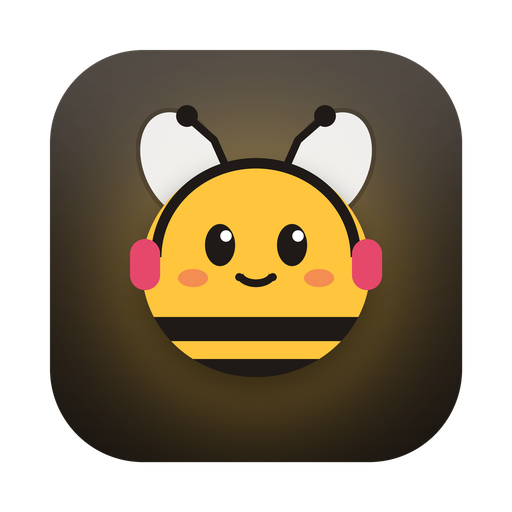
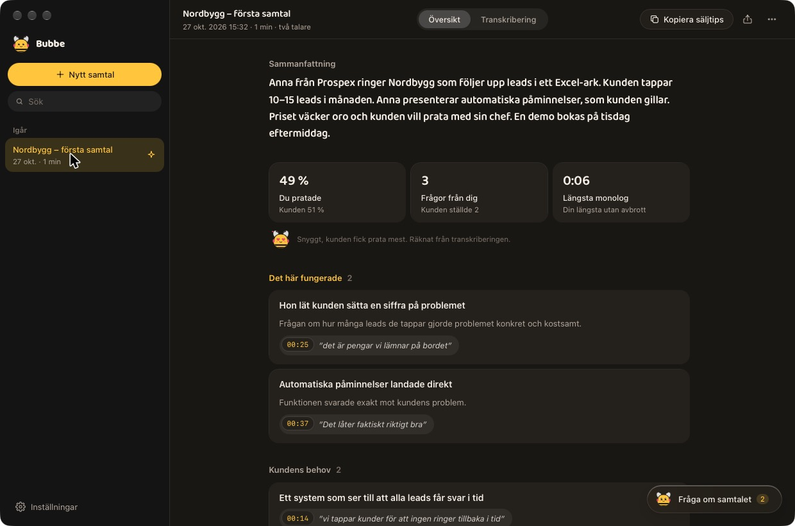

Bubbe Alla versionerSläpp in en inspelning av ett säljsamtal. Bubbe skriver ut det på din egen dator med en svensk talmodell, visar vad som fungerade och vad du kan säga nästa gång.

Transkriberingen sker på din dator. Ljudfilen laddas aldrig upp någonstans.
KB-Whisper från Kungliga biblioteket förstår svenska samtal, med tidsstämplar och två talare i stereo.
Vad som fungerade, kundens behov, invändningar och nästa steg, alltid med citat ur samtalet.
"Hur bemöter jag prisinvändningen?" Chatta med AI:n om just ditt samtal, med din egen Claude- eller ChatGPT-prenumeration.